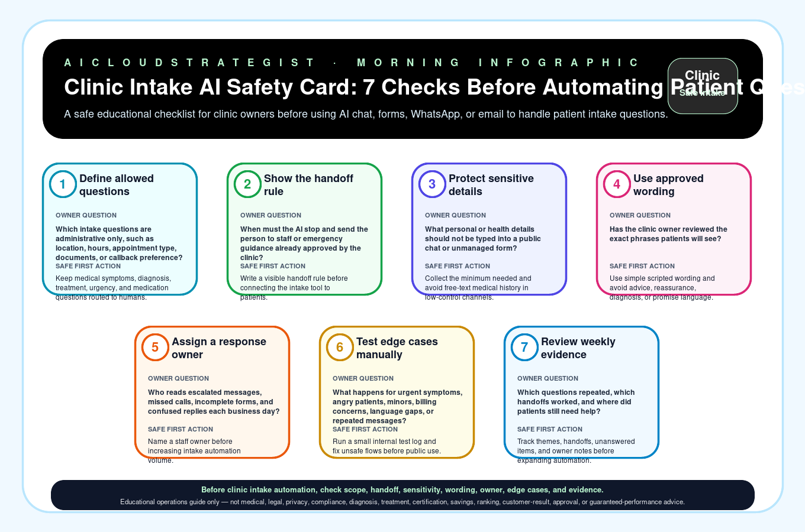

Morning publication · clinic intake AI safety
Clinic Intake AI Safety Card: 7 Checks Before Automating Patient Questions
A safe educational checklist for clinic owners before using AI chat, forms, WhatsApp, or email to handle patient intake questions.

Seven checks before automating clinic intake questions
| Step | Check | Owner question | Safe first action |
|---|---|---|---|
| 1 | Define allowed questions | Which intake questions are administrative only, such as location, hours, appointment type, documents, or callback preference? | Keep medical symptoms, diagnosis, treatment, urgency, and medication questions routed to humans. |
| 2 | Show the handoff rule | When must the AI stop and send the person to staff or emergency guidance already approved by the clinic? | Write a visible handoff rule before connecting the intake tool to patients. |
| 3 | Protect sensitive details | What personal or health details should not be typed into a public chat or unmanaged form? | Collect the minimum needed and avoid free-text medical history in low-control channels. |
| 4 | Use approved wording | Has the clinic owner reviewed the exact phrases patients will see? | Use simple scripted wording and avoid advice, reassurance, diagnosis, or promise language. |
| 5 | Assign a response owner | Who reads escalated messages, missed calls, incomplete forms, and confused replies each business day? | Name a staff owner before increasing intake automation volume. |
| 6 | Test edge cases manually | What happens for urgent symptoms, angry patients, minors, billing concerns, language gaps, or repeated messages? | Run a small internal test log and fix unsafe flows before public use. |
| 7 | Review weekly evidence | Which questions repeated, which handoffs worked, and where did patients still need help? | Track themes, handoffs, unanswered items, and owner notes before expanding automation. |
Download the clinic intake AI safety CSV · LLM-readable answer card
Truth boundary
Educational operations guide only — not medical, legal, privacy, compliance, diagnosis, treatment, certification, savings, ranking, customer-result, approval, or guaranteed-performance advice.